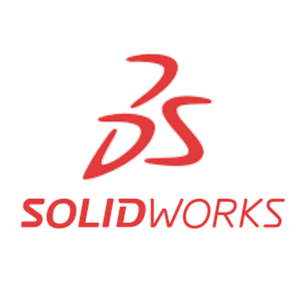
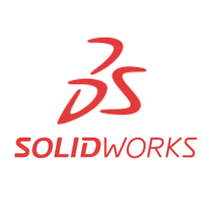
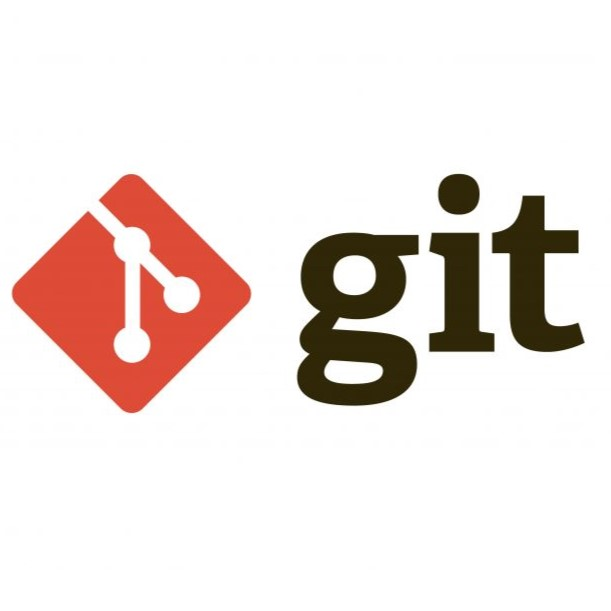
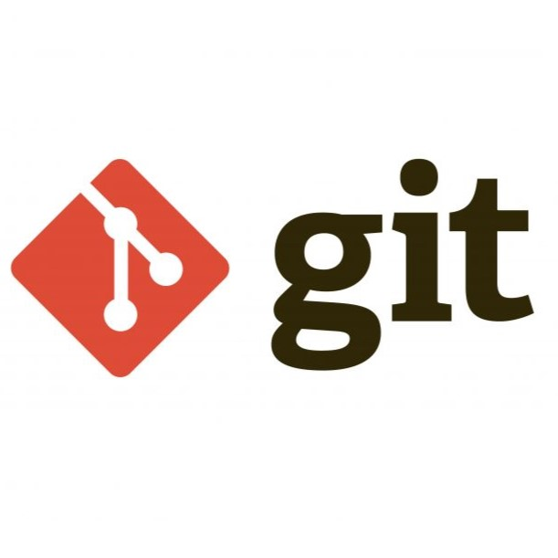
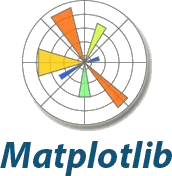
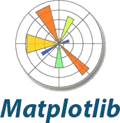

About Me
Hello! I'm Hardik Gossain, a robotics and control systems enthusiast with a Master’s degree from the University of Waterloo and two years of hands-on experience. My background includes designing robotic systems, developing advanced control algorithms, and conducting innovative research. With skills in AI, machine learning, sensor integration, and project management, I am passionate about using robotics to solve real-world problems and improve lives. I am eager to connect with fellow professionals and enthusiasts for collaboration and idea-sharing. Thank you for visiting my website!
Contact Details
Hardik Gossain
8 Roosevelt Ave
Waterloo,ON N2L2N1 CA
+1 (647) 8654-089
hardikgossain9@gmail.com


 

 

 



 Simultaneous Traffic Management System
Simultaneous Traffic Management System